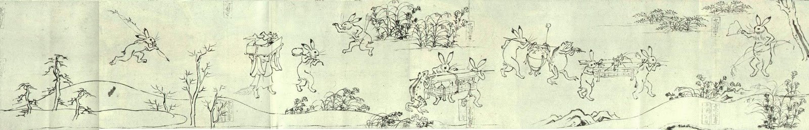

The History of Manga
Manga is a Japanese term used for describing
comics that are read from right-to-left.
The origin of these comics can be dated back
as far as the 11th century in Japan and
slowly became influenced by Western culture.
In Japan, both the comics and text are read
from right-to-left; however, translating and
distributing these books in America can be
confusing to unaccustomed readers.
Most manga brought over to the US would
be considered a backwards book; the pages
are read from right-to-left and so are the
panels within those pages. However, the
text within those panels are read from
left-to-right like most traditional English
books.
11th Century
The tradition of narrative art or
telling stories with a series of
sequential images
has been a
part of Japanese culture long
before Superman ever put on a
cape.
The earliest
examples of pre-manga
artwork that influenced the
development of modern Japanese
comics
are commonly attributed to
Toba Sojo, an 11th-century painter-
priest with a whimsical sense
of humor.
Chōjū-jinbutsu-giga, animal-person
caricatures, and Shigisan-engi, a
chronicle of stories
following a
Buddhist monk, are emakimono or
painted handscrolls. While there are
no word
balloons or sound effects in
Toba’s paintings, they do show a
progression of events,
happening
one after another as the scroll is
unrolled from right to left.
16-17th Century
In the 16th and 17th century,
a new art style using wood
blocks emerged and became
popular for depicting scenes of escape and fantasies in the red-light district.
Ukiyo-e
translates to the floating world, which was used to refer to teahouses, theaters,
restaurants and high-class brothels, were woodblock printings that were sometimes made
into
books.

Soon after ukiyo-e was introduced, akahon, Red Book, was produced for children that consisted of Japanese folktales and were later produced for adults as well due to popularity. These woodblock printed books were referred to as kusazoshi, which was a term used for various genres of illustrated literature.
18th Century
Printed in book form using woodblock technology, kibyôshi ("yellow covers") were storybooks for adults in which narration and dialogue were placed in and around ink-brush illustrations, often in creative ways that consciously blurred the distinction between text and picture. (Multi-volume kibyôshi were known as gôkan.) Like modern-day manga, they dealt with a variety of subjects, including humor, drama, fantasy, and even pornography.
As trade began to grow in Japan, there were magazines printed for Westerners in Japan. Charles Wirgman, an English cartoonist, produced a magazine for Westerners called, “Japan Punch,” which contained local news and cartoon strips. When Japan was opened to the outside world, European artists introduced shading, perspective and anatomy. They also introduced word balloons and separate sequences.

Since these comics and magazines could be purchased at such a low cost, they were affordable to the masses and thus began to boom in popularity. Over time the topics of these comics moved towards poking fun at the Japanese government and thus political propaganda through comics became a way to voice public opinions.
19th Century
But during the late 1920s and early 1930s, the Japanese government started intimidating artists and publishers. Many magazines either closed or started censoring themselves harshly; magazines who did neither frequently had their editors arrested. These types of arrests happened so often that magazines would sometimes pick an employee to be a "jail editor" who would have the honor of taking the punishment and saving his company.

Many were forced into tenkou, or a sort of forced conversion. Those who cooperated were greatly rewarded, and those who didn't cooperate were punished with detentions, ostracized and forbidden to write. During the war, cartoonists would produce three basic types of strips: single-panel strips about Japan's enemies, family comic strips that portrayed home life during a war, and propaganda.
WWII
During World War II, manga was used for propaganda to instill values such as sacrifice for the state and government. During this period of restricted creativity, manga began to decline and many publishing companies were closed.
After Japan’s surrender during World War II, creativity and manga began to slowly return and another important figure behind manga emerged. Machiko Hasegawa, known as the “grandmother of manga,” published her popular series, Sazae-san. A male-dominated industry probably also helped contribute to Hasagawa’s fame since she was the first female manga artist.


Osamu Tezuka
Years after World War II Osamu Tezuka single-handedly changed manga forever. Instead of following the Western influenced 2D art style, he created his own style of drawings that depicted three dimensions. With his technique to add cinematography to his comics, the images popped out and appeared to have a liveliness to them. This art style quickly grew and influenced much of the modern art in manga seen today.
Tezuka's innovations led to a broadening of the manga market and had a consequence that would inevitably force a radical restructuring of the market: the children who were raised on the manga of Tezuka and his followers, unlike their predecessors, didn't stop reading manga when they got to middle school. Or high school. Or college. Tezuka is also the father of the large eyes style used in anime and manga. Through his innovative art style and narrative story producing for all genres, many artists were influenced and thus the anime and manga movement exploded.
1950s
1959, Weekly Shônen Magazine and Weekly Shônen Sunday became the first children's weeklies, and others soon followed. Initially, these magazines were conceived of as general education and entertainment magazines, with manga usually occupying no more than forty percent of each issue. But circulations (hovering around 200,000) were low, as were those of the traditional monthly children's magazines. It didn't take long, however, for publishers to figure out that they could raise sales by increasing the space dedicated to manga. Within a few years, manga came to occupy more than half of the total space.